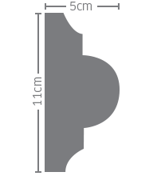

Serie 10
Trazos semi curvos y sencillos, que recuerdan la arquitectura de las haciendas, pero de mayor ligereza para casar con las casas estucadas del estilo californiano de ayer y hoy.
Marco
#10R
- Alto: 10 cm
- Ancho: 4 cm
- Largo: 122 cm
Para enmarcar puertas, ventanas, y entradas de garaje. Como banda de transición entre dos acabados distintos en la parte baja de los muros.


Repison
#11R
- Alto: 12 cm
- Ancho: 7.5 cm
- Largo: 122 cm
Para enmarcar la parte horizontal baja de las ventanas. Para el perímetro superior de bardas. Como cornisa en muros de baja altura. Para coronar columnas cuadradas. Como banda de transición en muros.


Cornisa
#12R
- Alto: 16 cm
- Ancho: 13.5 cm
- Largo: 122 cm
En perímetros superiores de los muros, donde estos terminan y se unen a la techumbre. En el perímetro superior de bardas o muretes. Para coronar columnas cuadradas.


Serie 20
Diseños curvos más completos y de mayor detalle. Emparejan muy bien con las casas de estilo toscano o español.
Marco
#20R
- Alto: 11 cm
- Ancho: 5 cm
- Largo: 122 cm
Para enmarcar puertas, ventanas, y entradas de garaje. Como banda de transición entre dos acabados distintos en la parte baja de los muros.



Repison
#21R
- Alto: 13 cm
- Ancho: 8 cm
- Largo: 122 cm
Para enmarcar la parte horizontal baja de las ventanas. Para el perímetro superior de bardas. Como cornisa en muros de baja altura. Para coronar columnas cuadradas. Como banda de transición en muros.


Cornisa
#22R
- Alto: 17 cm
- Ancho: 13 cm
- Largo: 122 cm
En perímetros superiores de los muros, donde estos terminan y se unen a la techumbre. En el perímetro superior de bardas o muretes. Para coronar columnas cuadradas.


Serie 30
Líneas elegantes que combinan trazos rectos, secciones curvas de gran amplitud y detalles de medio círculo. Estilo versátil que combina con prácticamente cualquier estilo de casa actual.
Marco
#30R
- Alto: 12 cm
- Ancho: 4.5 cm
- Largo: 122 cm
Para enmarcar puertas, ventanas, y entradas de garaje. Como banda de transición entre dos acabados distintos en la parte baja de los muros.


Repison
#31R
- Alto: 14 cm
- Ancho: 9 cm
- Largo: 122 cm
Para enmarcar la parte horizontal baja de las ventanas. Para el perímetro superior de bardas. Como cornisa en muros de baja altura. Para coronar columnas cuadradas. Como banda de transición en muros.


Cornisa
#32R
- Alto: 18 cm
- Ancho: 9.5 cm
- Largo: 122 cm
En perímetros superiores de los muros, donde estos terminan y se unen a la techumbre. En el perímetro superior de bardas o muretes. Para coronar columnas cuadradas.


Serie 40
Diseños modernos basados en la arquitectura colonial clásica. Ideal para usarse en residencias de techos de teja, arcos y con recuerdos del estilo colonial.
Marco
#40R
- Alto: 14 cm
- Ancho: 5cm
- Largo: 122 cm
Para enmarcar puertas, ventanas, y entradas de garaje. Como banda de transición entre dos acabados distintos en la parte baja de los muros.


Repison
#41R
- Alto: 16 cm
- Ancho: 9 cm
- Largo: 122 cm
Para enmarcar la parte horizontal baja de las ventanas. Para el perímetro superior de bardas. Como cornisa en muros de baja altura. Para coronar columnas cuadradas. Como banda de transición en muros.


Cornisa
#42R
- Alto: 20 cm
- Ancho: 12.5 cm
- Largo: 122 cm
En perímetros superiores de los muros, donde estos terminan y se unen a la techumbre. En el perímetro superior de bardas o muretes. Para coronar columnas cuadradas.